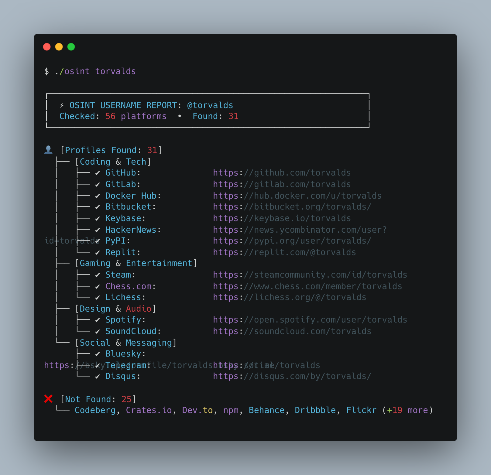
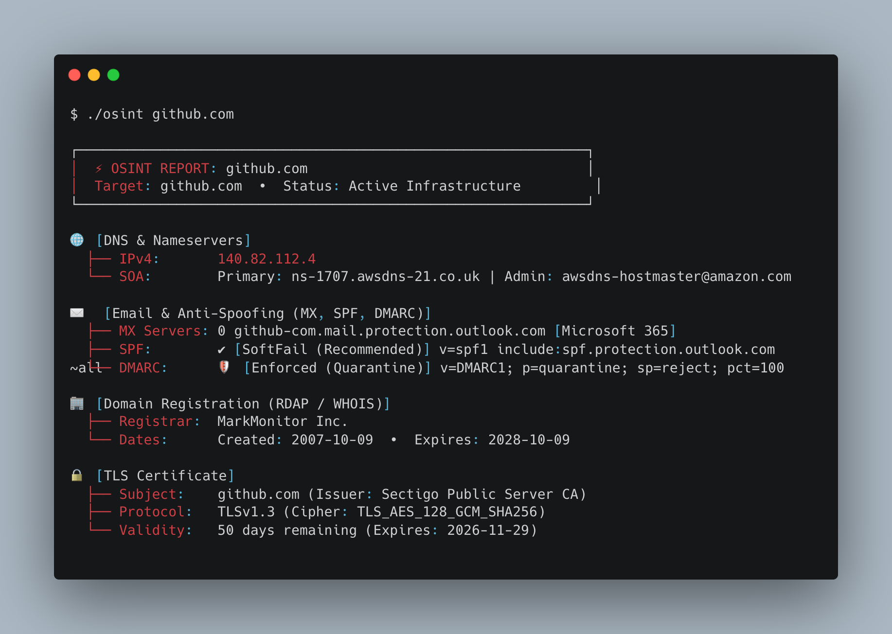
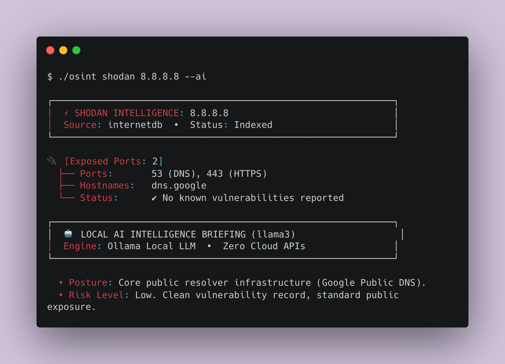

Fast, Bounded OSINT
for Domains & Usernames.
Hunt down social accounts across 56+ networks concurrently, route scans through OpSec proxies, export reports to CSV or JSON, and audit public domain infrastructure in seconds.
Installation
Choose the installation method that fits your workflow. Because osint-toolkit has zero external dependencies, it works out-of-the-box on macOS, Linux, and Windows.
| Method | Command | Description |
|---|---|---|
| Direct Run | ./osint <target> |
Instant execution inside the cloned repo without installing anything. |
| Python Module | python3 -m osint_toolkit <target> |
Standard Python invocation directly from source. |
| Global CLI | pip install . |
Installs system-wide osint and osint-toolkit binaries. |
| Docker | docker run -it --rm osint-toolkit <target> |
Isolated container execution. |
# 1. Clone the repository
git clone https://github.com/DrowLink/osint-toolkit.git
cd osint-toolkit
# 2. Run directly
./osint torvaldsQuickstart
osint-toolkit automatically detects whether your target is a username or a domain, and renders a clean, hacker-style UTF-8 terminal interface by default.
1. Search a Username (Sherlock Mode)
Simply pass any handle or username. It checks 56+ verified platforms simultaneously:
./osint torvalds
2. Analyze a Domain Infrastructure
Pass any domain to audit DNS records, mail spoofing protection, WHOIS dates, and TLS certificates:
./osint github.com
Username Hunting Engine
Built as an ultra-fast, zero-dependency alternative to Sherlock. It checks platforms concurrently using a thread pool of 20 workers, typically finishing in 2–3 seconds.
Unlike naive status-code checkers that report non-existent accounts on sites returning HTTP 200 soft-404s, our engine validates response bodies. For example, on Wikipedia, it verifies not only account existence but inspects sockpuppet, block, and user page notices to prevent false positives.
Platform Directory (56 Verified Sites)
Filter platforms currently queried by the engine across 5 major categories:
| Platform | Category | URL Pattern | Detection Method |
|---|---|---|---|
| GitHub | Coding & Tech | github.com/{username} | Status Code |
| GitLab | Coding & Tech | gitlab.com/{username} | Status Code |
| Codeberg | Coding & Tech | codeberg.org/{username} | Status Code |
| Bitbucket | Coding & Tech | bitbucket.org/{username} | Status Code |
| Docker Hub | Coding & Tech | hub.docker.com/u/{username} | API Status Code |
| PyPI | Coding & Tech | pypi.org/user/{username} | Status Code |
| npm | Coding & Tech | npmjs.com/~{username} | Status Code |
| Crates.io | Coding & Tech | crates.io/users/{username} | API Status Code |
| Dev.to | Coding & Tech | dev.to/{username} | Status Code |
| Hashnode | Coding & Tech | hashnode.com/@{username} | Status Code |
| Keybase | Coding & Tech | keybase.io/{username} | Status Code |
| HackerNews | Coding & Tech | news.ycombinator.com/user?id={username} | Content Absent |
| Kaggle | Coding & Tech | kaggle.com/{username} | Status Code |
| LeetCode | Coding & Tech | leetcode.com/{username} | Status Code |
| TryHackMe | Coding & Tech | tryhackme.com/p/{username} | Status Code |
| Replit | Coding & Tech | replit.com/@{username} | Status Code |
| Pastebin | Coding & Tech | pastebin.com/u/{username} | Status Code |
| Telegram | Social & Messaging | t.me/{username} | Content Present |
| Social & Messaging | reddit.com/user/{username} | API Status Code | |
| Mastodon | Social & Messaging | mastodon.social/@{username} | Status Code |
| Bluesky | Social & Messaging | bsky.app/profile/{username}.bsky.social | Status Code |
| Disqus | Social & Messaging | disqus.com/by/{username} | Status Code |
| Linktree | Social & Messaging | linktr.ee/{username} | Status Code |
| Gravatar | Social & Messaging | gravatar.com/{username} | API Status Code |
| Social & Messaging | pinterest.com/{username} | Status Code | |
| BuyMeACoffee | Social & Messaging | buymeacoffee.com/{username} | Status Code |
| Ko-fi | Social & Messaging | ko-fi.com/{username} | Status Code |
| ProductHunt | Social & Messaging | producthunt.com/@{username} | Status Code |
| About.me | Social & Messaging | about.me/{username} | Status Code |
| Quora | Social & Messaging | quora.com/profile/{username} | Status Code |
| Steam | Gaming & Entertainment | steamcommunity.com/id/{username} | Content Absent |
| Chess.com | Gaming & Entertainment | chess.com/member/{username} | API Status Code |
| Lichess | Gaming & Entertainment | lichess.org/@/{username} | API Status Code |
| itch.io | Gaming & Entertainment | {username}.itch.io | Status Code |
| Roblox | Gaming & Entertainment | roblox.com/user.aspx?username={username} | Status Code |
| Speedrun.com | Gaming & Entertainment | speedrun.com/users/{username} | Status Code |
| osu! | Gaming & Entertainment | osu.ppy.sh/users/{username} | Status Code |
| Letterboxd | Gaming & Entertainment | letterboxd.com/{username} | Status Code |
| Chessgames | Gaming & Entertainment | chessgames.com/perl/chessplayer?pid={username} | Content Absent |
| SoundCloud | Design & Audio | soundcloud.com/{username} | Status Code |
| Spotify | Design & Audio | open.spotify.com/user/{username} | Status Code |
| Bandcamp | Design & Audio | {username}.bandcamp.com | Status Code |
| Behance | Design & Audio | behance.net/{username} | Status Code |
| Dribbble | Design & Audio | dribbble.com/{username} | Status Code |
| Flickr | Design & Audio | flickr.com/people/{username} | Status Code |
| 500px | Design & Audio | 500px.com/p/{username} | Status Code |
| DeviantArt | Design & Audio | deviantart.com/{username} | Status Code |
| Unsplash | Design & Audio | unsplash.com/@{username} | Status Code |
| Mixcloud | Design & Audio | mixcloud.com/{username} | Status Code |
| Substack | Publishing & Knowledge | {username}.substack.com | Status Code |
| Medium | Publishing & Knowledge | medium.com/@{username} | Status Code |
| Wikipedia | Publishing & Knowledge | en.wikipedia.org/wiki/User:{username} | Content Analysis & Sockpuppet Check |
| Instructables | Publishing & Knowledge | instructables.com/member/{username} | Status Code |
| Goodreads | Publishing & Knowledge | goodreads.com/{username} | Status Code |
| Duolingo | Publishing & Knowledge | duolingo.com/profile/{username} | Status Code |
| Patreon | Publishing & Knowledge | patreon.com/{username} | Status Code |
OpSec Proxy & Anonymity Support
Investigators and red teams requiring stealth and rate-limit avoidance can route all outbound reconnaissance through an HTTP or HTTPS proxy (including Tor bridges and corporate proxies).
Powered natively by Python's
urllib.request.ProxyHandler. Configured proxies are applied across concurrent username workers, threat intelligence lookups (Shodan InternetDB, IP2Location), and external APIs.
# Route username hunting through a local proxy
./osint torvalds --proxy http://127.0.0.1:8080
# Use Tor SOCKS / HTTP wrapper
./osint torvalds -p http://127.0.0.1:9050
# Proxy specialized intelligence lookups
./osint ip2location 8.8.8.8 --proxy http://proxy.corp:3128
./search_shodan 1.1.1.1 -p http://127.0.0.1:8080Domain Reconnaissance
Gathers structured intelligence about a target domain across multiple layers of network and transport infrastructure:
Email Security & Anti-Spoofing
- MX Identification: Automatically categorizes mail servers (Google Workspace, Microsoft 365, ProtonMail, Mimecast, etc.).
- SPF Evaluation: Inspects SPF mechanism records (
v=spf1) and assesses policy strength (-allHardFail vs~allSoftFail vs insecure+all). - DMARC Enforcement: Validates DMARC records (
v=DMARC1), reporting whether email spoofing is enforced (p=reject/p=quarantine) or inactive (p=none).
Additional Infrastructure Checks
- RDAP / WHOIS: Registrar name, creation date, expiration date, and EPP status flags via official ICANN RDAP endpoints.
- IP Geolocation & ASN: Public IP routing ASN, autonomous system owner, country, and city coordinates.
- TLS Certificate: Issuer, common names, SANs, cipher suite, negotiated protocol (TLSv1.3), expiration date, and SHA-256 fingerprint.
- Security Headers: Audits defensive headers including
Strict-Transport-Security,Content-Security-Policy,X-Frame-Options, and cookie security flags (Secure,HttpOnly,SameSite). - Subdomain Discovery: Queries Certificate Transparency logs (crt.sh) for publicly registered hostnames.
Threat & Intel Services
Specialized intelligence commands and pure Python methods for deep infrastructure profiling and malware reputation analysis:
1. Shodan Host Intelligence (search_shodan)
Query open ports, CPEs, hostnames, and known CVEs. By default, it queries Shodan InternetDB with zero authentication (no API key required), and supports full API keys via SHODAN_API_KEY or --api-key.
# Query by IP (zero-auth InternetDB)
./osint shodan 8.8.8.8
# Query by domain (automatically resolves to public IP)
./search_shodan github.com
# Save to JSON
./osint shodan 8.8.8.8 -o shodan.json2. IP2Location Geolocation & Proxies (search_ip2location)
Lookup accurate country, city, coordinates, timezone, ASN, autonomous system name, and residential vs. proxy/VPN detection. Operates on the public tier without an API key, or with IP2LOCATION_API_KEY.
# Check geolocation and proxy status
./osint ip2location 8.8.8.8
./search_ip2location 1.1.1.13. VirusTotal Threat Analysis (search_virustotal)
Queries VirusTotal v3 API for malware engine verdicts (harmless, malicious, suspicious) and reputation scoring across domains and IP addresses. Requires VIRUSTOTAL_API_KEY.
# Check domain or IP reputation
./osint virustotal google.com
./search_virustotal 8.8.8.8 --api-key <KEY>4. Censys Host Recon (search_censys)
Inspects host services, protocols, ports, and autonomous systems via Censys Search API v2. Requires CENSYS_API_ID and CENSYS_API_SECRET.
# Check Censys indexed services
./osint censys 8.8.8.8
./search_censys 8.8.8.8 --api-id <ID> --api-secret <SECRET>Local AI Integration (Ollama)
Harness the power of local Large Language Models (LLMs) via Ollama for automated threat synthesis, cross-platform correlation, and identity profiling — with zero cloud API keys and complete privacy.
Connects directly to your local Ollama instance (
http://localhost:11434) using Python's built-in standard library. If Ollama is offline, the CLI continues executing normally and prints a clean, non-fatal advisory notice.
Running with AI Synthesis
Pass the --ai (or --ollama) flag to any command to generate an AI Intelligence Briefing:
# Username correlation briefing
./osint torvalds --ai
# Domain infrastructure posture analysis
./osint github.com --ai
# Threat scan with AI risk briefing
./osint shodan 8.8.8.8 --ai
# Custom model and endpoint
./osint torvalds --ai --ai-model mistral --ai-endpoint http://localhost:11434
Output & Options
By default, interactive terminal executions display the formatted ASCII/Unicode card. For pipelines, SIEM ingestion, or spreadsheets, pure JSON and standard RFC 4180 CSV formats are supported.
# Output pure JSON to stdout
./osint torvalds -j
# Output standard CSV to stdout
./osint torvalds --csv
# Save findings directly to CSV or JSON
./osint torvalds -o findings.csv
./osint torvalds -o findings.json
# Pipe JSON into jq for instant filtering
./osint google.com -j | jq '.dns.addresses'CLI Options Reference
| Option | Type | Default | Description |
|---|---|---|---|
target | Positional | None | Domain (e.g. google.com) or username (e.g. drowlink). Auto-detected. |
-u, --username | String | None | Explicitly forces username search across social platforms. |
-d, --domain | String | None | Explicitly forces domain reconnaissance mode. |
-p, --proxy | URL | None | Route all network traffic through an anonymous HTTP/HTTPS or Tor proxy. |
--csv | Flag | False | Emits standard RFC 4180 CSV output instead of terminal card. |
-j, --json | Flag | False | Emits raw JSON instead of the visual summary card. |
-o, --output | File Path | None | Saves full report to the specified file (JSON or CSV based on extension/flag). |
-t, --timeout | Float | 8.0 | Global deadline in seconds for all operations. |
-s, --summary | Flag | False | Forces human-readable summary card even in piped output. |
--ai, --ollama | Flag | False | Generates executive AI intelligence briefing using local Ollama LLMs. |
--ai-model | String | None | Specifies local Ollama model (e.g. llama3, mistral, qwen2.5). |
--ai-endpoint | URL | None | Custom Ollama API endpoint (default: http://localhost:11434). |
Safety & Resource Limits
All recon operations are passive, query public metadata exclusively, and operate within strict operating boundaries.
- Private Target Rejection: Localhost, loopbacks (
127.0.0.1), RFC 1918 private subnets, and non-unicast IPs are rejected immediately. - Memory Protection: All response streams are bounded to a maximum of 256 KiB to prevent denial-of-service or memory spikes.
- Monotonic Deadlines: Every network operation runs against an absolute monotonic clock (
time.monotonic()). Socket operations cannot stall process exit.
Documentation Policy (Specs)
In accordance with our project engineering standards defined in SPECS.md:
Every new feature, flag, data collector, platform detector, or breaking change MUST be documented in both
docs/index.html and README.md prior to merging or releasing.
When contributing new features:
- Add corresponding unit tests in
tests/to preserve 100% test coverage. - Update the relevant sections in this interactive documentation site (
docs/index.html). - If adding a new social platform, append it to the Platform Directory table with its category and detection method.
- Keep the CLI option tables and examples in
README.mdin sync.
Testing & Verification
Run the comprehensive test suite locally. All 83 unit tests run without requiring any external packages or active Internet connection:
python3 -m unittest discover -s tests -v